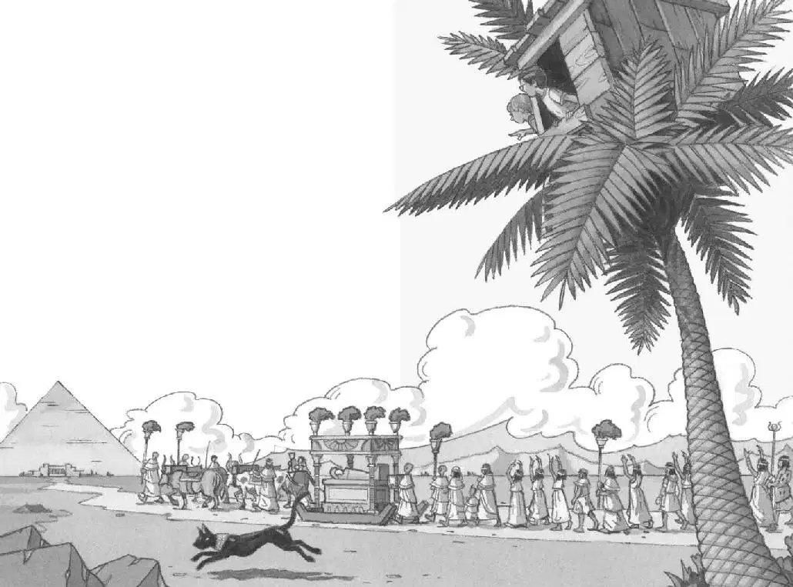
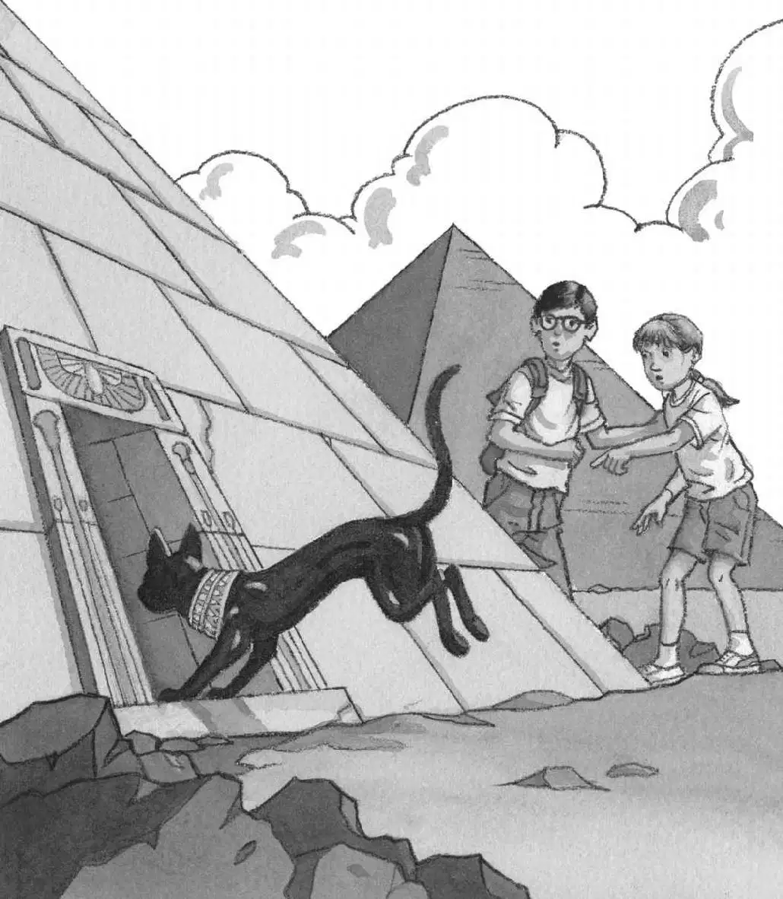

“Meow!”
Jack and Annie looked out the window.
The tree house was perched on the top of a palm tree. The tree stood with about a dozen other palm trees. They were in a patch of green surrounded by a desert.
“Meow!”
Jack and Annie looked down.
The black cat was sitting at the bottom of the tree. The cat’s yellow eyes were staring up at Jack and Annie.
“Hi!” Annie shouted.
“Shhh,” said Jack. “Someone might hear you.”
“In the middle of a desert?” said Annie.
The black cat stood up and began walking around the tree.
“Come back!” Annie called. She leaned out the window to see where the cat was going.
“Oh, wow!” she said. “Look, Jack.”
Jack leaned forward and looked down.
The cat was running away from the palm trees toward a giant pyramid in the desert.
A parade was going toward the pyramid. It looked exactly like the parade in the Egypt book.

“It’s the picture from the book!” said Jack.
“What are those people doing?” asked Annie.
Jack looked down at the Egypt book. He read the words under the picture:
When a royal person died, a grand funeral procession took place.
Family, servants, and other mourners followed the coffin. The coffin was called a sarcophagus. It was pulled on a sled by four oxen.
“It’s an Egyptian funeral,” said Jack. “The box is called a sar…sar…sar…oh, forget it.” He looked out the window again.
The oxen, the sled, the Egyptians, and the black cat were all moving in a slow, dreamy way.
“I’d better make some notes about this,” said Jack.
Jack liked to make notes. He reached into his backpack and pulled out his notebook. Jack wrote:
coffin called sarcophagus
“We’d better hurry,” said Annie, “if we want to see the mummy.”
Annie started down the rope ladder.
Jack looked up from his notebook.
“Mummy?” he said.
“There’s probably a mummy in that gold box,” Annie called up. “We’re in ancient Egypt. Remember?”
Jack loved mummies. He put down his pencil.
“Good-bye, Jack!” called Annie.
“Wait!” Jack called.
“Mummies!” Annie shouted.
“Oh, man,” said Jack. “Mummies!”
Jack shoved his notebook and the Egypt book into his pack. Then he started down the ladder.
When Jack got to the ground, he and Annie took off across the sand.
As they ran, a strange thing happened. The closer they got to the parade, the harder it was to see it. Then suddenly it was gone. The strange parade had vanished.
But the great stone pyramid was still there, towering above them.
Panting, Jack looked around.
What had happened? Where were the people? The oxen? The gold box? The cat?
“They’re gone,” said Annie.
“Where did they go?” said Jack.
“Maybe they were ghosts,” said Annie.
“Don’t be silly. There’s no such thing as ghosts,” said Jack. “It must have been a mirage.”
“A what?”
“Mirage. It happens in the desert all the time,” said Jack. “It looks like something’s there. But it just turns out to be the sunlight reflecting through heat.”
“How could sunlight look like people, a mummy box, and a bunch of cows?” said Annie.
Jack frowned.
“Ghosts,” she said.
“No way,” said Jack.
“Look!” Annie pointed at the pyramid.
Near the base was the sleek black cat. He was standing alone. He was staring at Jack and Annie.
“He’s no mirage,” said Annie.
The cat started to slink away. He walked along the side of the pyramid and slid around a corner.
“Where’s he going?” said Jack.
“Let’s find out,” said Annie.
They dashed around the corner just in time to see the cat disappear through a hole in the pyramid wall.
